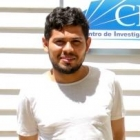

Estudiantes Tesistas |
|  | Isaac Bermúdez Programa: Doctorado en Ciencias Aplicadas con mención en Ingeniería Matemática, Universidad de Concepción, Chile. Título de la Tesis: Métodos de Galerkin Discontinuos para Problemas de Interfaz: Aplicación a Problemas de Desalinación del Agua. Profesor guía: Manuel Solano. Profesor co-guía: Jessika Camaño. Periodo de la tesis: Desde Enero de 2023. |
| Miguel Serón Programa: Doctorado en Matemática Aplicada, Universidad del Bío-Bío, Chile. Título de la Tesis: Conforming and non-conforming discretizations for desalination process models. Profesor guía: Ricardo Oyarzúa. Profesores co-guías: Jessika Camaño y Manuel Solano. Periodo de la tesis: Desde Septiembre de 2021. |
|
| Juan Paulo Ortega Programa: Doctorado en Ciencias Aplicadas con mención en Ingeniería Matemática, Universidad de Concepción, Chile. Título de la Tesis: Mixed Finite Element Methods for Brinkman-Forchheimer and Related Single and Coupled Models in Fluid Mechanics. Profesor guía: Gabriel N. Gatica. Profesor co-guía: Sergio Caucao. Periodo de la tesis: Desde Enero de 2021. |